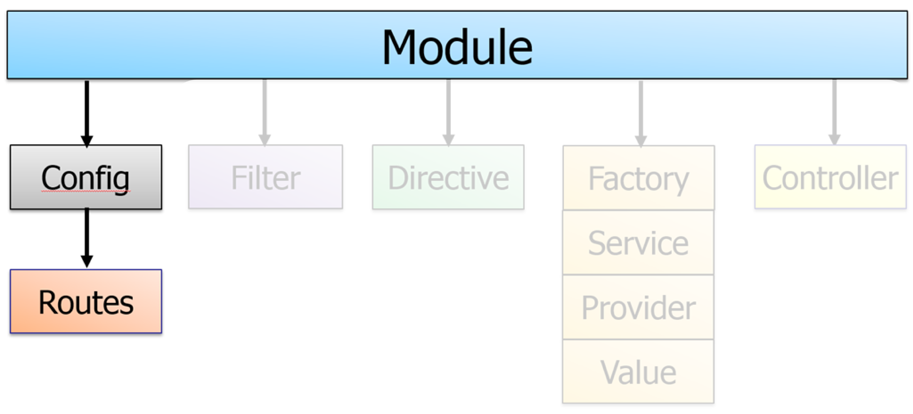
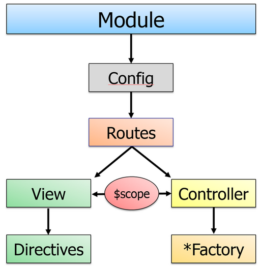
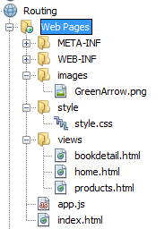
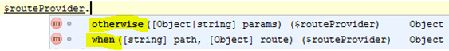

We have looked at Modules and Controllers. Today we will look at Routes (and the config() function)

Angular - The bits and pieces that
make up an application
Angular Routing and Views
First a short recap on SPA's
A single-page application (SPA) is a web application or web site that fits on a single web page with the goal of providing a more fluid user experience akin to a desktop application.
- In a SPA, either all necessary code – HTML, JavaScript, and CSS – is retrieved with a single page load or the appropriate resources are dynamically loaded and added to the page as necessary, usually in response to user actions
- The page does not reload at any point in the process, nor does control transfer to another page, although modern web technologies (such as those included in HTML5) can provide the perception and navigability of separate logical pages in the application.
- Interaction with the single page application often involves dynamic communication with the web server behind the scenes.
So, a SPA can have many views, giving users the feeling of navigating a traditional application
Angular Routing and Views
Views and ngView
Angular Routing

With Angular's Routing Service we can divide a SPA into multiple views making it much more manageable.
The service makes it easy to combine:
- A Controller
- A View Template
- The current URL location in the browser
Using this feature we can implement deep linking, which lets us utilize the browser's history (back and forward navigation) and bookmarks.
The Code for the example
We will use this example for the remaining of this lesson
Create a new NetBeans Web-project
Add the files given on the previous slide (fetch from Plunker) to the Web Pages Folder as sketched below:


RouteProvider and the config() function
Angular offers several ways to build reusable components with providers at the core of all of them Providers can only be injected into config functions via the Module aPI.
Routes in Angular are declared via the $routeProvider, which is the provider of the $route service. Follow the pattern below each time your are using the routprovider
var app = angular.module('viewApp', ['ngRoute']);
app.config(function ($routeProvider) {
$routeProvider
....
Important! As of AngularJS version 1.2, ngRoute is in its own module and must be imported like:
<script src="pathToAngularFiles/angular-route.js">
And loaded into the application as a dependent module (['ngRoute'] above)
The routeProvider API
The routeProvider has a very simple API with only two methods:
- when: Matches a URL-pattern and "marries" the template for this pattern with a Controller
- otherwise:Here, we don't pass in a pattern, because this takes care of "everything else"
Passing in parameters in route URLs
We can add parameters to our routes like: /:id< or /:firstName/:lastName
To use the parameters we must inject the $routeParams service into our route controller and parameters will be available as sketched below:
app.controller("RouteParamController",function($scope,$routeParams){
$scope.id = $routeParams.id;
})
Reuse data between (ng-)views
You will often find yourself in the situation that data has to reused between your views.
A naïve first try to solve this problem, would be to use the same controller for several views. But as we have seen Controllers are not singletons so each view will create its own instance of the controller.
This problem goes even further in that the same view will create a new instance each time you navigate back to that view.
The solution to this problem is to refactor you code into an Angular Service since services are Singletons.
Angular Services
Angular services are functions or objects that can hold behavior or state across our application and are wired together using dependency injection (DI).
Use services to organize and share code across your app
Angular services are:
- Lazily instantiated – Angular only instantiates a service when an application component depends on it.
- Singletons – Each component dependent on a service gets a reference to the single instance generated by the service factory.
- Usable by any other component such as controllers, directives, filters, etc.
Creating Services
Services can be created in several ways (with a factory, or a service or a provider)
This week we will only show how to do it via a factory
app.factory('MyService', function () {
var message = "Message from factory";
return {
getMessage: function () {
return message;
}
};
});
Here we return an object with one or more functions/properties
If a function in your return-object refer to local variables (message in the example) the function will become
a closure, and the variable will continue to be available for the function
Using the (factory) Service
//Observe how the service is injected into the controller
app.controller('AppCtrl', function (MyService) {
var self = this;
self.msgFromFactory = MyFactory.getMessage();
});
Refactor Controller Logic into a Service
Lets refactor the internal logic of the ProductController into an Angular Service
Whats with hashtag # ?
The # is an old browser short circuit which doesn't fire the request to the server. That is we can handle the request on the client, instead of sending it to the server. It is needed to support non-html5 browsers
Angular has a service which can alter this behaviour
$locationProvider.html5Mode(true),
but there are
many things you should focus on before you start to play around with this
Rest of today; Exercises :-)